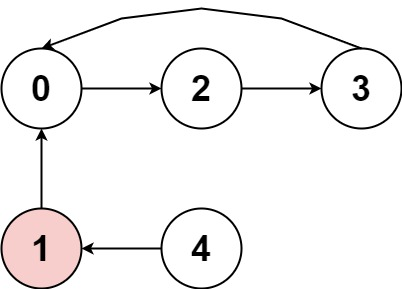
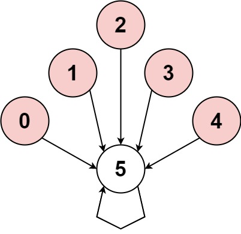
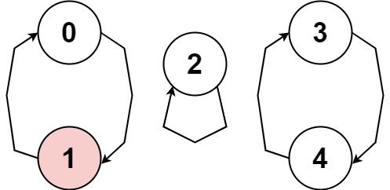

| Category | Difficulty | Likes | Dislikes |
|---|---|---|---|
| Algorithms | Medium | 800 | 881 |
microsoft | amazon
You are playing a game involving a circular array of non-zero integers nums. Each nums[i] denotes the number of indices forward/backward you must move if you are located at index i:
nums[i] is positive, move nums[i] steps forward, andnums[i] is negative, move abs(nums[i]) steps backward.Since the array is circular, you may assume that moving forward from the last element puts you on the first element, and moving backwards from the first element puts you on the last element.
A cycle in the array consists of a sequence of indices seq of length k where:
seq[0] -> seq[1] -> ... -> seq[k - 1] -> seq[0] -> ...nums[seq[j]] is either all positive or all negative.k > 1Return true if there is a cycle in nums, or false otherwise.
Example 1:

Input: nums = [2,-1,1,2,2]
Output: true
Explanation: The graph shows how the indices are connected. White nodes are jumping forward, while red is jumping backward.
We can see the cycle 0 --> 2 --> 3 --> 0 --> ..., and all of its nodes are white (jumping in the same direction).Example 2:

Input: nums = [-1,-2,-3,-4,-5,6]
Output: false
Explanation: The graph shows how the indices are connected. White nodes are jumping forward, while red is jumping backward.
The only cycle is of size 1, so we return false.Example 3:

Input: nums = [1,-1,5,1,4]
Output: true
Explanation: The graph shows how the indices are connected. White nodes are jumping forward, while red is jumping backward.
We can see the cycle 0 --> 1 --> 0 --> ..., and while it is of size > 1, it has a node jumping forward and a node jumping backward, so it is not a cycle.
We can see the cycle 3 --> 4 --> 3 --> ..., and all of its nodes are white (jumping in the same direction).
Constraints:
1 <= nums.length <= 5000-1000 <= nums[i] <= 1000nums[i] != 0
Follow up: Could you solve it in O(n) time complexity and O(1) extra space complexity?